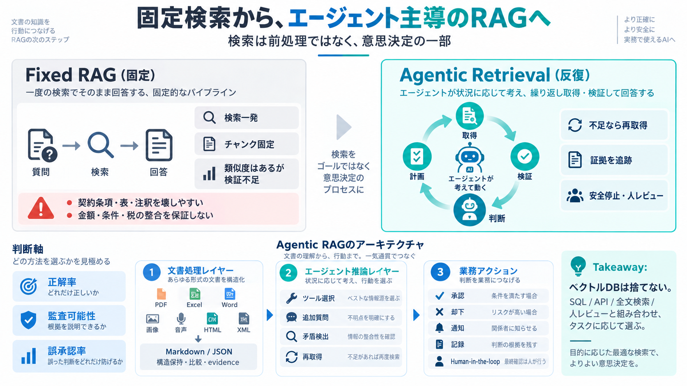

RAG for AI Agents: Why Agentic Retrieval Is Replacing Fixed Vector Pipelines | Claix
Is chunking the past? : Fixed chunking is becoming less universal. Structure-aware extraction, full-document processin…

Is chunking the past? : Fixed chunking is becoming less universal. Structure-aware extraction, full-document processin…
#### Example Consider an internal audit RAG agent at a multinational firm. The system analyzes multiple data sources (p…
What I like about Agentic RAG is how it feels way more natural for messy, real-world tasks. Regular RAG is fine for simp…
But lately, in real-world projects, I find myself proposing something much simpler far more often: Pure LLM API implemen…
Fine-tune and evaluate open-source LLMs (e.g. LLaMA 3, Mistral, Falcon, Mixtral) for enterprise use cases with both stru…